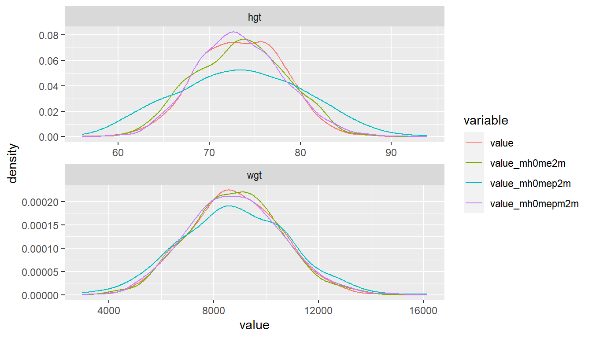

Chapter 5 Linear Regression
5.1 OLS and IV
Back to Fan’s R4Econ Homepage Table of Content
5.1.1 OLS and IV Regression
Go back to fan’s REconTools Package, R Code Examples Repository (bookdown site), or Intro Stats with R Repository (bookdown site).
IV regression using AER package. Option to store all results in dataframe row for combining results from other estimations together. Produce Row Statistics.
5.1.1.1 Construct Program
# IV regression function
# The code below uses the AER library's regresison function
# All results are stored in a single row as data_frame
# This functoin could work with dplyr do
# var.y is single outcome, vars.x, vars.c and vars.z are vectors of endogenous variables, controls and instruments.
regf.iv <- function(var.y, vars.x,
vars.c, vars.z, df, transpose=TRUE) {
# A. Set-Up Equation
str.vars.x <- paste(vars.x, collapse='+')
str.vars.c <- paste(vars.c, collapse='+')
df <- df %>%
select(one_of(var.y, vars.x, vars.c, vars.z)) %>%
drop_na() %>% filter_all(all_vars(!is.infinite(.)))
if (length(vars.z) >= 1) {
# library(AER)
str.vars.z <- paste(vars.z, collapse='+')
equa.iv <- paste(var.y,
paste(paste(str.vars.x, str.vars.c, sep='+'),
paste(str.vars.z, str.vars.c, sep='+'),
sep='|'),
sep='~')
# print(equa.iv)
# B. IV Regression
ivreg.summ <- summary(ivreg(as.formula(equa.iv), data=df),
vcov = sandwich, df = Inf, diagnostics = TRUE)
# C. Statistics from IV Regression
# ivreg.summ$coef
# ivreg.summ$diagnostics
# D. Combine Regression Results into a Matrix
df.results <- suppressWarnings(suppressMessages(
as_tibble(ivreg.summ$coef, rownames='rownames') %>%
full_join(as_tibble(ivreg.summ$diagnostics, rownames='rownames')) %>%
full_join(tibble(rownames=c('vars'),
var.y=var.y,
vars.x=str.vars.x,
vars.z=str.vars.z,
vars.c=str.vars.c))))
} else {
# OLS regression
equa.ols <- paste(var.y,
paste(paste(vars.x, collapse='+'),
paste(vars.c, collapse='+'), sep='+'),
sep='~')
lmreg.summ <- summary(lm(as.formula(equa.ols), data=df))
lm.diagnostics <- as_tibble(
list(df1=lmreg.summ$df[[1]],
df2=lmreg.summ$df[[2]],
df3=lmreg.summ$df[[3]],
sigma=lmreg.summ$sigma,
r.squared=lmreg.summ$r.squared,
adj.r.squared=lmreg.summ$adj.r.squared)) %>%
gather(variable, value) %>%
rename(rownames = variable) %>%
rename(v = value)
df.results <- suppressWarnings(suppressMessages(
as_tibble(lmreg.summ$coef, rownames='rownames') %>%
full_join(lm.diagnostics) %>%
full_join(tibble(rownames=c('vars'),
var.y=var.y,
vars.x=str.vars.x,
vars.c=str.vars.c))))
}
# E. Flatten Matrix, All IV results as a single tibble
# row to be combined with other IV results
df.row.results <- df.results %>%
gather(variable, value, -rownames) %>%
drop_na() %>%
unite(esti.val, rownames, variable) %>%
mutate(esti.val = gsub(' ', '', esti.val))
if (transpose) {
df.row.results <- df.row.results %>% spread(esti.val, value)
}
# F. Return
return(data.frame(df.row.results))
}5.1.1.2 Program Testing
Load Data
# Library
library(tidyverse)
library(AER)
# Load Sample Data
setwd('C:/Users/fan/R4Econ/_data/')
df <- read_csv('height_weight.csv')5.1.1.2.1 Example No Instrument, OLS
# One Instrucments
var.y <- c('hgt')
vars.x <- c('prot')
vars.z <- NULL
vars.c <- c('sex', 'hgt0', 'wgt0')
# Regression
regf.iv(var.y, vars.x, vars.c, vars.z, df, transpose=FALSE) %>%
kable() %>%
kable_styling_fc()| esti.val | value |
|---|---|
| (Intercept)_Estimate | 52.1186286658651 |
| prot_Estimate | 0.374472386357917 |
| sexMale_Estimate | 0.611043720578292 |
| hgt0_Estimate | 0.148513781160842 |
| wgt0_Estimate | 0.00150560230505631 |
| (Intercept)_Std.Error | 1.57770483608693 |
| prot_Std.Error | 0.00418121191133815 |
| sexMale_Std.Error | 0.118396259120659 |
| hgt0_Std.Error | 0.0393807494783186 |
| wgt0_Std.Error | 0.000187123663624397 |
| (Intercept)_tvalue | 33.0344608660332 |
| prot_tvalue | 89.5607288744356 |
| sexMale_tvalue | 5.16100529794248 |
| hgt0_tvalue | 3.77122790013449 |
| wgt0_tvalue | 8.04602836377991 |
| (Intercept)_Pr(>|t|) | 9.92126150975783e-233 |
| prot_Pr(>|t|) | 0 |
| sexMale_Pr(>|t|) | 2.48105505495642e-07 |
| hgt0_Pr(>|t|) | 0.000162939618371183 |
| wgt0_Pr(>|t|) | 9.05257561534111e-16 |
| df1_v | 5 |
| df2_v | 18958 |
| df3_v | 5 |
| sigma_v | 8.06197784622979 |
| r.squared_v | 0.319078711001325 |
| adj.r.squared_v | 0.318935041565942 |
| vars_var.y | hgt |
| vars_vars.x | prot |
| vars_vars.c | sex+hgt0+wgt0 |
5.1.1.2.2 Example 1 Insturment
# One Instrucments
var.y <- c('hgt')
vars.x <- c('prot')
vars.z <- c('momEdu')
vars.c <- c('sex', 'hgt0', 'wgt0')
# Regression
regf.iv(var.y, vars.x, vars.c, vars.z, df, transpose=FALSE) %>%
kable() %>%
kable_styling_fc()| esti.val | value |
|---|---|
| (Intercept)_Estimate | 43.4301969117558 |
| prot_Estimate | 0.130833343849446 |
| sexMale_Estimate | 0.868121847262411 |
| hgt0_Estimate | 0.412093881817148 |
| wgt0_Estimate | 0.000858630042617921 |
| (Intercept)_Std.Error | 1.82489550971182 |
| prot_Std.Error | 0.0192036220809189 |
| sexMale_Std.Error | 0.13373016700542 |
| hgt0_Std.Error | 0.0459431912927002 |
| wgt0_Std.Error | 0.00022691057702563 |
| (Intercept)_zvalue | 23.798730766023 |
| prot_zvalue | 6.81295139521853 |
| sexMale_zvalue | 6.49159323361366 |
| hgt0_zvalue | 8.96963990141069 |
| wgt0_zvalue | 3.7840018472164 |
| (Intercept)_Pr(>|z|) | 3.4423766196876e-125 |
| prot_Pr(>|z|) | 9.56164541643828e-12 |
| sexMale_Pr(>|z|) | 8.49333228172763e-11 |
| hgt0_Pr(>|z|) | 2.97485394526792e-19 |
| wgt0_Pr(>|z|) | 0.000154326676608523 |
| Weakinstruments_df1 | 1 |
| Wu-Hausman_df1 | 1 |
| Sargan_df1 | 0 |
| Weakinstruments_df2 | 16394 |
| Wu-Hausman_df2 | 16393 |
| Weakinstruments_statistic | 935.817456612075 |
| Wu-Hausman_statistic | 123.595856606729 |
| Weakinstruments_p-value | 6.39714929178024e-200 |
| Wu-Hausman_p-value | 1.30703637796748e-28 |
| vars_var.y | hgt |
| vars_vars.x | prot |
| vars_vars.z | momEdu |
| vars_vars.c | sex+hgt0+wgt0 |
5.1.1.2.3 Example Multiple Instrucments
# Multiple Instrucments
var.y <- c('hgt')
vars.x <- c('prot')
vars.z <- c('momEdu', 'wealthIdx', 'p.A.prot', 'p.A.nProt')
vars.c <- c('sex', 'hgt0', 'wgt0')
# Regression
regf.iv(var.y, vars.x, vars.c, vars.z, df, transpose=FALSE) %>%
kable() %>%
kable_styling_fc()| esti.val | value |
|---|---|
| (Intercept)_Estimate | 42.2437613555242 |
| prot_Estimate | 0.26699945194704 |
| sexMale_Estimate | 0.695548488812932 |
| hgt0_Estimate | 0.424954881263031 |
| wgt0_Estimate | 0.000486951420329484 |
| (Intercept)_Std.Error | 1.85356686789642 |
| prot_Std.Error | 0.0154939347964083 |
| sexMale_Std.Error | 0.133157977814374 |
| hgt0_Std.Error | 0.0463195803786233 |
| wgt0_Std.Error | 0.000224867994873235 |
| (Intercept)_zvalue | 22.7905246296649 |
| prot_zvalue | 17.2325142357597 |
| sexMale_zvalue | 5.22348341593581 |
| hgt0_zvalue | 9.17441129192849 |
| wgt0_zvalue | 2.16549901022595 |
| (Intercept)_Pr(>|z|) | 5.69294074735747e-115 |
| prot_Pr(>|z|) | 1.51424021931607e-66 |
| sexMale_Pr(>|z|) | 1.75588197502565e-07 |
| hgt0_Pr(>|z|) | 4.54048595587756e-20 |
| wgt0_Pr(>|z|) | 0.030349491114332 |
| Weakinstruments_df1 | 4 |
| Wu-Hausman_df1 | 1 |
| Sargan_df1 | 3 |
| Weakinstruments_df2 | 14914 |
| Wu-Hausman_df2 | 14916 |
| Weakinstruments_statistic | 274.147084958343 |
| Wu-Hausman_statistic | 17.7562545747101 |
| Sargan_statistic | 463.729664547249 |
| Weakinstruments_p-value | 8.61731956233366e-228 |
| Wu-Hausman_p-value | 2.52567249124181e-05 |
| Sargan_p-value | 3.45452874915475e-100 |
| vars_var.y | hgt |
| vars_vars.x | prot |
| vars_vars.z | momEdu+wealthIdx+p.A.prot+p.A.nProt |
| vars_vars.c | sex+hgt0+wgt0 |
5.1.1.2.4 Example Multiple Endogenous Variables
# Multiple Instrucments
var.y <- c('hgt')
vars.x <- c('prot', 'cal')
vars.z <- c('momEdu', 'wealthIdx', 'p.A.prot', 'p.A.nProt')
vars.c <- c('sex', 'hgt0', 'wgt0')
# Regression
regf.iv(var.y, vars.x, vars.c, vars.z, df, transpose=FALSE) %>%
kable() %>%
kable_styling_fc()| esti.val | value |
|---|---|
| (Intercept)_Estimate | 44.0243196254297 |
| prot_Estimate | -1.4025623247106 |
| cal_Estimate | 0.065104895750151 |
| sexMale_Estimate | 0.120832787571818 |
| hgt0_Estimate | 0.286525437984517 |
| wgt0_Estimate | 0.000850481389651033 |
| (Intercept)_Std.Error | 2.75354847244082 |
| prot_Std.Error | 0.198640060273635 |
| cal_Std.Error | 0.00758881298880996 |
| sexMale_Std.Error | 0.209984580636303 |
| hgt0_Std.Error | 0.0707828182888255 |
| wgt0_Std.Error | 0.00033711210444429 |
| (Intercept)_zvalue | 15.9882130516502 |
| prot_zvalue | -7.06082309267581 |
| cal_zvalue | 8.57906181719737 |
| sexMale_zvalue | 0.575436478267434 |
| hgt0_zvalue | 4.04795181812859 |
| wgt0_zvalue | 2.52284441418383 |
| (Intercept)_Pr(>|z|) | 1.54396598126854e-57 |
| prot_Pr(>|z|) | 1.65519210848649e-12 |
| cal_Pr(>|z|) | 9.56500648203187e-18 |
| sexMale_Pr(>|z|) | 0.564996139463599 |
| hgt0_Pr(>|z|) | 5.16677787108928e-05 |
| wgt0_Pr(>|z|) | 0.0116409892837831 |
| Weakinstruments(prot)_df1 | 4 |
| Weakinstruments(cal)_df1 | 4 |
| Wu-Hausman_df1 | 2 |
| Sargan_df1 | 2 |
| Weakinstruments(prot)_df2 | 14914 |
| Weakinstruments(cal)_df2 | 14914 |
| Wu-Hausman_df2 | 14914 |
| Weakinstruments(prot)_statistic | 274.147084958343 |
| Weakinstruments(cal)_statistic | 315.036848606231 |
| Wu-Hausman_statistic | 94.7020085425169 |
| Sargan_statistic | 122.081979628898 |
| Weakinstruments(prot)_p-value | 8.61731956233366e-228 |
| Weakinstruments(cal)_p-value | 1.18918641220866e-260 |
| Wu-Hausman_p-value | 1.35024050408262e-41 |
| Sargan_p-value | 3.09196773720398e-27 |
| vars_var.y | hgt |
| vars_vars.x | prot+cal |
| vars_vars.z | momEdu+wealthIdx+p.A.prot+p.A.nProt |
| vars_vars.c | sex+hgt0+wgt0 |
5.1.1.2.5 Examples Line by Line
The examples are just to test the code with different types of variables.
# Selecting Variables
var.y <- c('hgt')
vars.x <- c('prot', 'cal')
vars.z <- c('momEdu', 'wealthIdx', 'p.A.prot', 'p.A.nProt')
vars.c <- c('sex', 'hgt0', 'wgt0')# A. create Equation
str.vars.x <- paste(vars.x, collapse='+')
str.vars.c <- paste(vars.c, collapse='+')
str.vars.z <- paste(vars.z, collapse='+')
print(str.vars.x)## [1] "prot+cal"print(str.vars.c)## [1] "sex+hgt0+wgt0"print(str.vars.z)## [1] "momEdu+wealthIdx+p.A.prot+p.A.nProt"equa.iv <- paste(var.y,
paste(paste(str.vars.x, str.vars.c, sep='+'),
paste(str.vars.z, str.vars.c, sep='+'),
sep='|'),
sep='~')
print(equa.iv)## [1] "hgt~prot+cal+sex+hgt0+wgt0|momEdu+wealthIdx+p.A.prot+p.A.nProt+sex+hgt0+wgt0"# B. regression
res.ivreg <- ivreg(as.formula(equa.iv), data=df)
coef(res.ivreg)## (Intercept) prot cal sexMale hgt0 wgt0
## 44.0243196254 -1.4025623247 0.0651048958 0.1208327876 0.2865254380 0.0008504814# C. Regression Summary
ivreg.summ <- summary(res.ivreg, vcov = sandwich, df = Inf, diagnostics = TRUE)
ivreg.summ$coef## Estimate Std. Error z value Pr(>|z|)
## (Intercept) 44.0243196254 2.7535484724 15.9882131 1.543966e-57
## prot -1.4025623247 0.1986400603 -7.0608231 1.655192e-12
## cal 0.0651048958 0.0075888130 8.5790618 9.565006e-18
## sexMale 0.1208327876 0.2099845806 0.5754365 5.649961e-01
## hgt0 0.2865254380 0.0707828183 4.0479518 5.166778e-05
## wgt0 0.0008504814 0.0003371121 2.5228444 1.164099e-02
## attr(,"df")
## [1] 0
## attr(,"nobs")
## [1] 14922ivreg.summ$diagnostics## df1 df2 statistic p-value
## Weak instruments (prot) 4 14914 274.14708 8.617320e-228
## Weak instruments (cal) 4 14914 315.03685 1.189186e-260
## Wu-Hausman 2 14914 94.70201 1.350241e-41
## Sargan 2 NA 122.08198 3.091968e-27# D. Combine Regression Results into a Matrix
df.results <- suppressMessages(as_tibble(ivreg.summ$coef, rownames='rownames') %>%
full_join(as_tibble(ivreg.summ$diagnostics, rownames='rownames')) %>%
full_join(tibble(rownames=c('vars'),
var.y=var.y,
vars.x=str.vars.x,
vars.z=str.vars.z,
vars.c=str.vars.c)))
# E. Flatten Matrix, All IV results as a single tibble row to be combined with other IV results
df.row.results <- df.results %>%
gather(variable, value, -rownames) %>%
drop_na() %>%
unite(esti.val, rownames, variable) %>%
mutate(esti.val = gsub(' ', '', esti.val))# F. Results as Single Colum
# df.row.results# G. Results as Single Row
# df.row.results# t(df.row.results %>% spread(esti.val, value)) %>%
# kable() %>%
# kable_styling_fc_wide()5.1.2 IV Loop over RHS
Go back to fan’s REconTools Package, R Code Examples Repository (bookdown site), or Intro Stats with R Repository (bookdown site).
Regression with a Variety of Outcome Variables and Right Hand Side Variables. There are M outcome variables, and there are N alternative right hand side variables. Regress each M outcome variable and each N alternative right hand side variable, with some common sets of controls and perhaps shared instruments. The output file is a M by N matrix of coefficients, with proper variable names and row names. The matrix stores coefficients for this key endogenous variable.
- Dependency: R4Econ/linreg/ivreg/ivregdfrow.R
5.1.2.1 Construct Program
The program relies on double lapply. lapply is used for convenience, not speed.
ff_reg_mbyn <- function(list.vars.y, list.vars.x,
vars.c, vars.z, df,
return_all = FALSE,
stats_ends = 'value', time = FALSE) {
# regf.iv() function is from C:\Users\fan\R4Econ\linreg\ivreg\ivregdfrow.R
if (time) {
start_time <- Sys.time()
}
if (return_all) {
df.reg.out.all <-
bind_rows(lapply(list.vars.x,
function(x) (
bind_rows(
lapply(list.vars.y, regf.iv,
vars.x=x, vars.c=vars.c, vars.z=vars.z, df=df))
)))
} else {
df.reg.out.all <-
(lapply(list.vars.x,
function(x) (
bind_rows(
lapply(list.vars.y, regf.iv,
vars.x=x, vars.c=vars.c, vars.z=vars.z, df=df)) %>%
select(vars_var.y, starts_with(x)) %>%
select(vars_var.y, ends_with(stats_ends))
))) %>% reduce(full_join)
}
if (time) {
end_time <- Sys.time()
print(paste0('Estimation for all ys and xs took (seconds):',
end_time - start_time))
}
return(df.reg.out.all)
}5.1.2.2 Prepare Data
# Library
library(tidyverse)
library(AER)
# Load Sample Data
setwd('C:/Users/fan/R4Econ/_data/')
df <- read_csv('height_weight.csv')
# Source Dependency
source('C:/Users/fan/R4Econ/linreg/ivreg/ivregdfrow.R')
# Setting
options(repr.matrix.max.rows=50, repr.matrix.max.cols=50)Parameters.
var.y1 <- c('hgt')
var.y2 <- c('wgt')
var.y3 <- c('vil.id')
list.vars.y <- c(var.y1, var.y2, var.y3)
var.x1 <- c('prot')
var.x2 <- c('cal')
var.x3 <- c('wealthIdx')
var.x4 <- c('p.A.prot')
var.x5 <- c('p.A.nProt')
list.vars.x <- c(var.x1, var.x2, var.x3, var.x4, var.x5)
vars.z <- c('indi.id')
vars.c <- c('sex', 'wgt0', 'hgt0', 'svymthRound')5.1.2.3 Program Testing
5.1.2.3.1 Test Program OLS Z-Stat
vars.z <- NULL
suppressWarnings(suppressMessages(
ff_reg_mbyn(list.vars.y, list.vars.x,
vars.c, vars.z, df,
return_all = FALSE,
stats_ends = 'value'))) %>%
kable() %>%
kable_styling_fc_wide()| vars_var.y | prot_tvalue | cal_tvalue | wealthIdx_tvalue | p.A.prot_tvalue | p.A.nProt_tvalue |
|---|---|---|---|---|---|
| hgt | 18.8756010031786 | 23.4421863484661 | 13.508899618216 | 3.83682180045518 | 32.5448257554855 |
| wgt | 16.3591125056062 | 17.3686031309332 | 14.1390521528113 | 1.36958319982295 | 12.0961557911467 |
| vil.id | -14.9385580468907 | -19.6150110809452 | 34.0972558327347 | 8.45943342783186 | 17.7801422421419 |
5.1.2.3.2 Test Program IV T-stat
vars.z <- c('indi.id')
suppressWarnings(suppressMessages(
ff_reg_mbyn(list.vars.y, list.vars.x,
vars.c, vars.z, df,
return_all = FALSE,
stats_ends = 'value'))) %>%
kable() %>%
kable_styling_fc_wide()| vars_var.y | prot_zvalue | cal_zvalue | wealthIdx_zvalue | p.A.prot_zvalue | p.A.nProt_zvalue |
|---|---|---|---|---|---|
| hgt | 8.87674929300964 | 12.0739764947235 | 4.62589553677969 | 26.6373587567312 | 32.1162192385744 |
| wgt | 5.60385871756365 | 6.1225187008946 | 5.17869536991717 | 11.9295584469998 | 12.3509307017263 |
| vil.id | -9.22106223347162 | -13.0586007975839 | -51.5866689219593 | -29.9627476577329 | -38.3528894620707 |
5.1.2.3.3 Test Program OLS Coefficient
vars.z <- NULL
suppressWarnings(suppressMessages(
ff_reg_mbyn(list.vars.y, list.vars.x,
vars.c, vars.z, df,
return_all = FALSE,
stats_ends = 'Estimate'))) %>%
kable() %>%
kable_styling_fc_wide()| vars_var.y | prot_Estimate | cal_Estimate | wealthIdx_Estimate | p.A.prot_Estimate | p.A.nProt_Estimate |
|---|---|---|---|---|---|
| hgt | 0.049431093806755 | 0.00243408846205622 | 0.21045655488185 | 3.86952250259526e-05 | 0.00542428867316449 |
| wgt | 16.5557424523585 | 0.699072500364623 | 106.678721085969 | 0.00521731297924587 | 0.779514232050632 |
| vil.id | -0.0758835879205584 | -0.00395676177098486 | 0.451733304543324 | 0.000149388430455142 | 0.00526237555581024 |
5.1.2.3.4 Test Program IV coefficient
vars.z <- c('indi.id')
suppressWarnings(suppressMessages(
ff_reg_mbyn(list.vars.y, list.vars.x,
vars.c, vars.z, df,
return_all = FALSE,
stats_ends = 'Estimate'))) %>%
kable() %>%
kable_styling_fc_wide()| vars_var.y | prot_Estimate | cal_Estimate | wealthIdx_Estimate | p.A.prot_Estimate | p.A.nProt_Estimate |
|---|---|---|---|---|---|
| hgt | 0.859205733632614 | 0.0238724384575419 | 0.144503490136948 | 0.00148073028434642 | 0.0141317656200726 |
| wgt | 98.9428234201406 | 2.71948246216953 | 69.1816142883022 | 0.221916473012486 | 2.11856940494335 |
| vil.id | -6.02451379136132 | -0.168054407187466 | -1.91414470908345 | -0.00520794333267238 | -0.0494468877742109 |
5.1.2.3.5 Test Program OLS Return All
vars.z <- NULL
t(suppressWarnings(suppressMessages(
ff_reg_mbyn(list.vars.y, list.vars.x,
vars.c, vars.z, df,
return_all = TRUE,
stats_ends = 'Estimate')))) %>%
kable() %>%
kable_styling_fc_wide()| X.Intercept._Estimate | 27.3528514188608 | 99.873884728925 | 31.4646660224049 | 27.9038445914729 | 219.626705179399 | 30.5103987898551 | 35.7840188807906 | -2662.74787734003 | 29.2381039651127 | 23.9948407749744 | -547.959546430028 | 22.3367814226238 | 24.4904444950827 | -476.703973630552 | 22.7781908464511 |
| X.Intercept._Pr…t.. | 5.68247182214952e-231 | 0.75529705553815 | 6.78164655340399e-84 | 8.24252673989353e-242 | 0.493216914827181 | 1.62608789535248e-79 | 2.26726906489443e-145 | 7.13318862990131e-05 | 1.53578035267873e-124 | 2.11912344053336e-165 | 0.0941551350855875 | 3.04337266226599e-49 | 2.34941965806705e-181 | 0.143844033032183 | 9.58029450711211e-52 |
| X.Intercept._Std.Error | 0.831272666092284 | 320.450650378664 | 1.61328519718754 | 0.828072565159449 | 320.522532223672 | 1.60831193651104 | 1.38461348429899 | 670.301542938561 | 1.22602177264147 | 0.86658104216672 | 327.343126852912 | 1.5098937308759 | 0.843371070670838 | 326.132837036936 | 1.5004526558957 |
| X.Intercept._tvalue | 32.9047886867776 | 0.31166697465244 | 19.503474077155 | 33.6973421962119 | 0.685214557790078 | 18.9704485163756 | 25.8440491058106 | -3.97246270039407 | 23.8479483950102 | 27.6890903532576 | -1.6739607509042 | 14.7936116071335 | 29.0387533397398 | -1.46168652614567 | 15.1808794212527 |
| adj.r.squared_v | 0.814249026159781 | 0.60716936506893 | 0.0373247512680971 | 0.81608922805658 | 0.607863678511207 | 0.0453498711076042 | 0.935014931990565 | 0.92193683733695 | 0.059543122812776 | 0.814690803458616 | 0.617300597776144 | 0.0261131074199838 | 0.824542352656376 | 0.620250730454724 | 0.0385437355117917 |
| df1_v | 6 | 6 | 6 | 6 | 6 | 6 | 6 | 6 | 6 | 6 | 6 | 6 | 6 | 6 | 6 |
| df2_v | 18957 | 18962 | 18999 | 18957 | 18962 | 18999 | 25092 | 25102 | 30013 | 18587 | 18591 | 18845 | 18587 | 18591 | 18845 |
| df3_v | 6 | 6 | 6 | 6 | 6 | 6 | 6 | 6 | 6 | 6 | 6 | 6 | 6 | 6 | 6 |
| hgt0_Estimate | 0.60391817340617 | 56.3852027199184 | -0.296844389234445 | 0.589847843438394 | 52.9707041800704 | -0.273219210757899 | 0.439374451256039 | 47.176969664749 | -0.35908163982046 | 0.687269209411865 | 72.105560623359 | -0.108789161111504 | 0.622395388389206 | 62.7336220289257 | -0.157811627494693 |
| hgt0_Pr…t.. | 1.14533314566771e-183 | 1.52417506966835e-12 | 1.40290395213743e-13 | 7.79174951119325e-177 | 3.05720143843395e-11 | 8.49149153665126e-12 | 2.71000479249152e-36 | 0.00520266507060071 | 2.41020063623865e-31 | 1.31914432912869e-220 | 4.78613024244006e-19 | 0.0034801146146182 | 1.11511327164938e-190 | 8.38546282719268e-15 | 2.13723119924676e-05 |
| hgt0_Std.Error | 0.0206657538633713 | 7.96735224000553 | 0.0401060913799595 | 0.0205836398278421 | 7.96822145797115 | 0.0399777363511633 | 0.0348701896610764 | 16.8823489375743 | 0.0307984635553859 | 0.0213841849324282 | 8.07744906400683 | 0.0372288594891345 | 0.0208846437570215 | 8.07589192978212 | 0.0371223237183417 |
| hgt0_tvalue | 29.2231378249683 | 7.0770314931977 | -7.40147890309685 | 28.6561486875877 | 6.64774497790599 | -6.83428417151858 | 12.6002885423502 | 2.79445531182864 | -11.659076407325 | 32.1391351404584 | 8.92677379355593 | -2.92217281443323 | 29.8015803204665 | 7.76801157994423 | -4.25112470577158 |
| prot_Estimate | 0.049431093806755 | 16.5557424523585 | -0.0758835879205584 | NA | NA | NA | NA | NA | NA | NA | NA | NA | NA | NA | NA |
| prot_Pr…t.. | 9.54769322304645e-79 | 9.61203373222183e-60 | 3.56396093562335e-50 | NA | NA | NA | NA | NA | NA | NA | NA | NA | NA | NA | NA |
| prot_Std.Error | 0.00261878251179557 | 1.01201959743751 | 0.00507971302734622 | NA | NA | NA | NA | NA | NA | NA | NA | NA | NA | NA | NA |
| prot_tvalue | 18.8756010031786 | 16.3591125056062 | -14.9385580468907 | NA | NA | NA | NA | NA | NA | NA | NA | NA | NA | NA | NA |
| r.squared_v | 0.814298005954592 | 0.607272921412825 | 0.0375780335372857 | 0.816137722617266 | 0.60796705182314 | 0.0456010419476623 | 0.93502787877066 | 0.921952383432195 | 0.0596997716363463 | 0.814740639193486 | 0.617403496088206 | 0.0263714328556815 | 0.824589538985803 | 0.620352835549783 | 0.0387987636986586 |
| sexMale_Estimate | 0.935177182449406 | 415.163616765357 | -0.254089999175318 | 0.893484662055608 | 405.534891838028 | -0.181389489610951 | 1.80682463132073 | 999.926876716707 | -0.33436777751525 | 0.932686930233136 | 397.141948675354 | -0.445232370681998 | 0.96466980500711 | 401.59056368102 | -0.423829627017582 |
| sexMale_Pr…t.. | 2.36432111724607e-51 | 2.48252880290814e-67 | 0.0343768259467621 | 2.08765935335877e-47 | 2.51355675686752e-64 | 0.129768754080748 | 1.26527362032354e-66 | 2.64630894140004e-86 | 0.000311174554787706 | 7.90489020586094e-47 | 6.19449742677662e-59 | 7.93666802281971e-05 | 1.24556615236597e-52 | 1.18469030741261e-60 | 0.00015644693636154 |
| sexMale_Std.Error | 0.0618482294097262 | 23.8518341439675 | 0.120093045309631 | 0.0616078355613525 | 23.8567507583516 | 0.11972270545355 | 0.104475287357902 | 50.5879876531386 | 0.0927193334338799 | 0.0647209948973267 | 24.4473730956481 | 0.112797805327952 | 0.0629827627260302 | 24.3549086073387 | 0.112083516545945 |
| sexMale_tvalue | 15.1205166481668 | 17.4059409544552 | -2.11577613441484 | 14.5027763743757 | 16.9987478993157 | -1.51508010885476 | 17.2942776901016 | 19.7660931597596 | -3.60623577771614 | 14.4108867873979 | 16.2447698213453 | -3.94717228218682 | 15.316409812052 | 16.4891016491029 | -3.78137339083082 |
| sigma_v | 4.21029844914315 | 1623.77111076428 | 8.18491760066961 | 4.18939119979502 | 1622.33549880859 | 8.15073036560541 | 8.18607049768594 | 3964.45339913597 | 7.93450742809862 | 4.35662621773428 | 1645.77655955938 | 7.6435668370875 | 4.23923961592693 | 1639.42085007515 | 7.59462918474114 |
| svymthRound_Estimate | 0.87166589100565 | 189.04290688382 | -0.0154759587993917 | 0.851989049736817 | 185.318286001897 | 0.0201471237605442 | 0.432815253441723 | 189.877994795061 | 0.00215144302579706 | 0.91961467696139 | 205.597385664745 | -0.0509574460702806 | 0.921894094780682 | 205.945143306004 | -0.0557204455206461 |
| svymthRound_Pr…t.. | 0 | 0 | 0.0397984032097113 | 0 | 0 | 0.0117151185126433 | 0 | 0 | 0.000447277200167272 | 0 | 0 | 1.37139389802397e-18 | 0 | 0 | 7.79141497751766e-23 |
| svymthRound_Std.Error | 0.00387681209575621 | 1.4955473831309 | 0.00752730297891317 | 0.00411253488213795 | 1.59266949679221 | 0.00799217807522278 | 0.000728323735328998 | 0.352701518968252 | 0.000612792699568233 | 0.00331108017589107 | 1.25083486490652 | 0.00578476859618168 | 0.00317113547025635 | 1.22639878616071 | 0.00565696328562864 |
| svymthRound_tvalue | 224.840892330022 | 126.403823119306 | -2.05597660181154 | 207.168832400006 | 116.357025971267 | 2.52085521254888 | 594.262183761197 | 538.353209678558 | 3.51088227277012 | 277.738571133786 | 164.368128386085 | -8.80889965139067 | 290.714194782148 | 167.926734460268 | -9.84988636256528 |
| vars_var.y | hgt | wgt | vil.id | hgt | wgt | vil.id | hgt | wgt | vil.id | hgt | wgt | vil.id | hgt | wgt | vil.id |
| vars_vars.c | sex+wgt0+hgt0+svymthRound | sex+wgt0+hgt0+svymthRound | sex+wgt0+hgt0+svymthRound | sex+wgt0+hgt0+svymthRound | sex+wgt0+hgt0+svymthRound | sex+wgt0+hgt0+svymthRound | sex+wgt0+hgt0+svymthRound | sex+wgt0+hgt0+svymthRound | sex+wgt0+hgt0+svymthRound | sex+wgt0+hgt0+svymthRound | sex+wgt0+hgt0+svymthRound | sex+wgt0+hgt0+svymthRound | sex+wgt0+hgt0+svymthRound | sex+wgt0+hgt0+svymthRound | sex+wgt0+hgt0+svymthRound |
| vars_vars.x | prot | prot | prot | cal | cal | cal | wealthIdx | wealthIdx | wealthIdx | p.A.prot | p.A.prot | p.A.prot | p.A.nProt | p.A.nProt | p.A.nProt |
| wgt0_Estimate | -0.000146104685986986 | 0.637023553461055 | -0.000903390591533867 | -0.000116898230009949 | 0.649394003614758 | -0.000941137072743919 | 0.00122231975126219 | 1.32870822160235 | -0.000845938526704796 | -0.000489534836079617 | 0.580023505722658 | -0.00156196911156061 | 3.23596154259101e-05 | 0.65551206304675 | -0.00115432723977403 |
| wgt0_Pr…t.. | 0.136011583497549 | 2.96480083692757e-63 | 2.05763549729273e-06 | 0.230228828649018 | 7.43034302413852e-66 | 6.66901196231733e-07 | 1.22269348058816e-13 | 6.75367630221077e-62 | 4.32675510884621e-09 | 7.77000489086602e-07 | 7.42419220783427e-54 | 1.40362012201826e-19 | 0.740027016459552 | 4.09082062947785e-67 | 2.75472781728448e-11 |
| wgt0_Std.Error | 9.79994437486573e-05 | 0.0378027371614794 | 0.000190221503167431 | 9.74307633896921e-05 | 0.037739875283113 | 0.000189270503626621 | 0.000164767846917989 | 0.0798131859486402 | 0.000144040382619518 | 9.90410500454311e-05 | 0.0374185042114355 | 0.000172365145002826 | 9.75208524392668e-05 | 0.0377202854835204 | 0.000173241059789276 |
| wgt0_tvalue | -1.49087260496811 | 16.8512547316329 | -4.74915073475531 | -1.19980821193398 | 17.2071051836606 | -4.97244448929308 | 7.41843614592224 | 16.6477281392748 | -5.872926128913 | -4.94274682926991 | 15.5009805428138 | -9.0619777654873 | 0.331822524275644 | 17.3782370584956 | -6.66312732777158 |
| cal_Estimate | NA | NA | NA | 0.00243408846205622 | 0.699072500364623 | -0.00395676177098486 | NA | NA | NA | NA | NA | NA | NA | NA | NA |
| cal_Pr…t.. | NA | NA | NA | 8.01672708877986e-120 | 4.71331900885298e-67 | 7.94646124029527e-85 | NA | NA | NA | NA | NA | NA | NA | NA | NA |
| cal_Std.Error | NA | NA | NA | 0.000103833679413418 | 0.0402492068645167 | 0.000201721108117477 | NA | NA | NA | NA | NA | NA | NA | NA | NA |
| cal_tvalue | NA | NA | NA | 23.4421863484661 | 17.3686031309332 | -19.6150110809452 | NA | NA | NA | NA | NA | NA | NA | NA | NA |
| wealthIdx_Estimate | NA | NA | NA | NA | NA | NA | 0.21045655488185 | 106.678721085969 | 0.451733304543324 | NA | NA | NA | NA | NA | NA |
| wealthIdx_Pr…t.. | NA | NA | NA | NA | NA | NA | 1.93494257274268e-41 | 3.2548345535026e-45 | 4.82890644822007e-250 | NA | NA | NA | NA | NA | NA |
| wealthIdx_Std.Error | NA | NA | NA | NA | NA | NA | 0.0155791042075745 | 7.54496977117083 | 0.0132483771350785 | NA | NA | NA | NA | NA | NA |
| wealthIdx_tvalue | NA | NA | NA | NA | NA | NA | 13.508899618216 | 14.1390521528113 | 34.0972558327347 | NA | NA | NA | NA | NA | NA |
| p.A.prot_Estimate | NA | NA | NA | NA | NA | NA | NA | NA | NA | 3.86952250259526e-05 | 0.00521731297924587 | 0.000149388430455142 | NA | NA | NA |
| p.A.prot_Pr…t.. | NA | NA | NA | NA | NA | NA | NA | NA | NA | 0.000125048896903791 | 0.170833589209346 | 2.88060045451681e-17 | NA | NA | NA |
| p.A.prot_Std.Error | NA | NA | NA | NA | NA | NA | NA | NA | NA | 1.00852286184785e-05 | 0.00380941660201464 | 1.76593895713687e-05 | NA | NA | NA |
| p.A.prot_tvalue | NA | NA | NA | NA | NA | NA | NA | NA | NA | 3.83682180045518 | 1.36958319982295 | 8.45943342783186 | NA | NA | NA |
| p.A.nProt_Estimate | NA | NA | NA | NA | NA | NA | NA | NA | NA | NA | NA | NA | 0.00542428867316449 | 0.779514232050632 | 0.00526237555581024 |
| p.A.nProt_Pr…t.. | NA | NA | NA | NA | NA | NA | NA | NA | NA | NA | NA | NA | 5.25341325077391e-226 | 1.47950939943836e-33 | 3.7685780281174e-70 |
| p.A.nProt_Std.Error | NA | NA | NA | NA | NA | NA | NA | NA | NA | NA | NA | NA | 0.000166671307872964 | 0.06444313759758 | 0.000295969260771016 |
| p.A.nProt_tvalue | NA | NA | NA | NA | NA | NA | NA | NA | NA | NA | NA | NA | 32.5448257554855 | 12.0961557911467 | 17.7801422421419 |
5.1.2.3.6 Test Program IV Return All
vars.z <- c('indi.id')
t(suppressWarnings(suppressMessages(
ff_reg_mbyn(list.vars.y, list.vars.x,
vars.c, vars.z, df,
return_all = TRUE,
stats_ends = 'Estimate')))) %>%
kable() %>%
kable_styling_fc_wide()| X.Intercept._Estimate | 40.2173991882938 | 1408.1626637032 | -64.490636067872 | 39.6732302990235 | 1325.54736576331 | -59.8304089440729 | 35.5561817357046 | -2791.221534909 | 21.8005242861645 | 24.3009261707644 | -499.067024090554 | 21.4632286881661 | 25.299209739617 | -352.278518334717 | 17.9359211844992 |
| X.Intercept._Pr…z.. | 3.69748206920405e-59 | 0.00217397545504963 | 0.000109756271656929 | 1.30030240177373e-103 | 0.00138952700443324 | 3.75547414421179e-07 | 2.01357089467444e-142 | 1.95034793045284e-05 | 1.17899313785408e-34 | 1.97968607369592e-84 | 0.155922992163314 | 1.84405333738942e-09 | 1.29388565624566e-157 | 0.287184942021997 | 1.13855583530306e-12 |
| X.Intercept._Std.Error | 2.47963650430699 | 459.377029874119 | 16.673099250727 | 1.83545587849039 | 414.645900526211 | 11.7754321198995 | 1.39936229104453 | 653.605248808641 | 1.77547715237629 | 1.2481331128579 | 351.723712333143 | 3.57067054655531 | 0.945826571474308 | 330.990098562619 | 2.52170174723203 |
| X.Intercept._zvalue | 16.2190704639323 | 3.06537456626657 | -3.86794531107106 | 21.6149190857443 | 3.19681772828602 | -5.08095230263053 | 25.4088465605032 | -4.27050048939585 | 12.2786847788984 | 19.4698193008609 | -1.41891776582254 | 6.01097984491234 | 26.748254386829 | -1.0643173915611 | 7.11262590993832 |
| hgt0_Estimate | 0.403139725681418 | 35.5765914326678 | 1.20995060148712 | 0.357976348180876 | 31.0172706497394 | 1.5037447089682 | 0.460434521499963 | 59.1545587745268 | 0.412512139031067 | 0.515794899569023 | 46.2591615803265 | 0.520812513246773 | 0.510868687340428 | 45.5654716961559 | 0.534362107844268 |
| hgt0_Pr…z.. | 1.25009876641748e-13 | 0.000445802636381424 | 0.00097112649404847 | 2.82141265004339e-17 | 0.0013100303315764 | 3.70002169470828e-08 | 2.98739737280869e-37 | 0.000542570320022534 | 3.02226357947691e-20 | 8.57492956381676e-59 | 2.8561488738123e-07 | 1.10039023747789e-08 | 3.24936430168307e-102 | 6.3454545304127e-08 | 3.42500501176006e-17 |
| hgt0_Std.Error | 0.0543948312973965 | 10.1318250572006 | 0.366789440587685 | 0.0423453726223874 | 9.65135595900306 | 0.273179527952317 | 0.0361031059207763 | 17.1025823111635 | 0.0447499166716409 | 0.0319035514861838 | 9.01263684093548 | 0.0911390672920558 | 0.0237991645877977 | 8.42434865398195 | 0.063380058773461 |
| hgt0_zvalue | 7.41136089709158 | 3.51137048180512 | 3.29876072644971 | 8.45373003027063 | 3.21377335801252 | 5.50460248701607 | 12.7533216258548 | 3.45880859967647 | 9.21816552325528 | 16.1673191711084 | 5.13270005180026 | 5.71448149208973 | 21.4658243761363 | 5.40878275196011 | 8.4310762436216 |
| prot_Estimate | 0.859205733632614 | 98.9428234201406 | -6.02451379136132 | NA | NA | NA | NA | NA | NA | NA | NA | NA | NA | NA | NA |
| prot_Pr…z.. | 6.88427338202428e-19 | 2.09631602352917e-08 | 2.94171378745816e-20 | NA | NA | NA | NA | NA | NA | NA | NA | NA | NA | NA | NA |
| prot_Std.Error | 0.0967928354481331 | 17.6561952052848 | 0.653342710289155 | NA | NA | NA | NA | NA | NA | NA | NA | NA | NA | NA | NA |
| prot_zvalue | 8.87674929300964 | 5.60385871756365 | -9.22106223347162 | NA | NA | NA | NA | NA | NA | NA | NA | NA | NA | NA | NA |
| Sargan_df1 | 0 | 0 | 0 | 0 | 0 | 0 | 0 | 0 | 0 | 0 | 0 | 0 | 0 | 0 | 0 |
| sexMale_Estimate | 0.154043421788007 | 333.799680049259 | 5.41175429817609 | 0.106307556057668 | 330.452608866758 | 5.83118942788808 | 1.80283907885782 | 997.747599807148 | -0.452827875182598 | 1.02741625216018 | 411.365911332896 | -0.789122421167432 | 1.02009164592608 | 409.820707458838 | -0.746032636368145 |
| sexMale_Pr…z.. | 0.38807812932888 | 5.06413216642981e-24 | 5.80077629932476e-06 | 0.423490075745117 | 2.52735690930834e-27 | 6.12283824664132e-12 | 1.1689328480129e-65 | 2.02347084785411e-89 | 0.000647195788038449 | 1.69796551008584e-27 | 2.05327249429949e-54 | 0.00428270841484855 | 1.70848440093529e-51 | 2.36314216739034e-62 | 6.57521045473888e-05 |
| sexMale_Std.Error | 0.178475271469781 | 33.0216035385405 | 1.19371921154418 | 0.132821186086547 | 30.5174257711927 | 0.847955715223327 | 0.105343525210948 | 49.7632792630648 | 0.132754263303719 | 0.0945646985181925 | 26.4822313532216 | 0.276250047248363 | 0.0675715533063635 | 24.5920104216267 | 0.18692145837209 |
| sexMale_zvalue | 0.86310792817082 | 10.1085242471545 | 4.53352366774387 | 0.800381017440976 | 10.8283251459136 | 6.87676174970095 | 17.113904962338 | 20.0498764266063 | -3.41102322376347 | 10.8646912458831 | 15.5336574870174 | -2.85655126226267 | 15.0964658352764 | 16.6647907361992 | -3.99115565898846 |
| svymthRound_Estimate | 0.20990165085783 | 121.78985943172 | 4.84745570027424 | 0.322893837128574 | 135.494858749214 | 4.07024693316581 | 0.433164820953121 | 190.07735139541 | 0.0137438264666969 | 1.00582859923509 | 218.549980922774 | -0.369567838754916 | 0.929266902426869 | 207.078222946319 | -0.0985678389223824 |
| svymthRound_Pr…z.. | 0.00846239710392287 | 5.96047652813855e-17 | 2.07373887977152e-19 | 9.66146445882893e-11 | 4.48931446042076e-34 | 5.64723572160763e-36 | 0 | 0 | 1.57416908709431e-66 | 0 | 0 | 2.42696379701225e-102 | 0 | 0 | 1.84569897952709e-27 |
| svymthRound_Std.Error | 0.0797183179471441 | 14.5577085129475 | 0.538050140685815 | 0.0498896912188091 | 11.133488331472 | 0.325043349284718 | 0.00120472816008751 | 0.739269879490032 | 0.000797655931686456 | 0.00746867714609297 | 1.9315711781906 | 0.0172056989832505 | 0.00539330635998817 | 1.46167854745858 | 0.00907867488118012 |
| svymthRound_zvalue | 2.63304164291327 | 8.36600480930094 | 9.00930105527994 | 6.47215545416802 | 12.1700274626596 | 12.5221664806331 | 359.553993426746 | 257.11496798237 | 17.2302692435808 | 134.672925279848 | 113.146221785884 | -21.4793853545086 | 172.300040161061 | 141.671520941705 | -10.8570733297996 |
| vars_var.y | hgt | wgt | vil.id | hgt | wgt | vil.id | hgt | wgt | vil.id | hgt | wgt | vil.id | hgt | wgt | vil.id |
| vars_vars.c | sex+wgt0+hgt0+svymthRound | sex+wgt0+hgt0+svymthRound | sex+wgt0+hgt0+svymthRound | sex+wgt0+hgt0+svymthRound | sex+wgt0+hgt0+svymthRound | sex+wgt0+hgt0+svymthRound | sex+wgt0+hgt0+svymthRound | sex+wgt0+hgt0+svymthRound | sex+wgt0+hgt0+svymthRound | sex+wgt0+hgt0+svymthRound | sex+wgt0+hgt0+svymthRound | sex+wgt0+hgt0+svymthRound | sex+wgt0+hgt0+svymthRound | sex+wgt0+hgt0+svymthRound | sex+wgt0+hgt0+svymthRound |
| vars_vars.x | prot | prot | prot | cal | cal | cal | wealthIdx | wealthIdx | wealthIdx | p.A.prot | p.A.prot | p.A.prot | p.A.nProt | p.A.nProt | p.A.nProt |
| vars_vars.z | indi.id | indi.id | indi.id | indi.id | indi.id | indi.id | indi.id | indi.id | indi.id | indi.id | indi.id | indi.id | indi.id | indi.id | indi.id |
| Weakinstruments_df1 | 1 | 1 | 1 | 1 | 1 | 1 | 1 | 1 | 1 | 1 | 1 | 1 | 1 | 1 | 1 |
| Weakinstruments_df2 | 18957 | 18962 | 18999 | 18957 | 18962 | 18999 | 25092 | 25102 | 30013 | 18587 | 18591 | 18845 | 18587 | 18591 | 18845 |
| Weakinstruments_p.value | 1.42153759923994e-19 | 4.45734829676713e-19 | 5.72345606957941e-20 | 1.77770827184424e-37 | 4.03760292920738e-37 | 5.47447735093002e-38 | 0 | 0 | 0 | 0 | 0 | 0 | 0 | 0 | 0 |
| Weakinstruments_statistic | 82.0931934821266 | 79.8251182827386 | 83.8989817367586 | 164.392129625299 | 162.747072038429 | 166.75260665498 | 7029.47383089383 | 7038.38467113128 | 12942.6315513372 | 1710.98122418591 | 1715.15052113399 | 1725.71954882902 | 5097.88462603711 | 5110.7741807338 | 5136.55662964887 |
| wgt0_Estimate | -0.00163274724538111 | 0.492582112313709 | 0.00999798623641602 | -0.000658938519302931 | 0.601258436431587 | 0.00326074237566435 | 0.00112485055604169 | 1.27282038539707 | -0.00512158791392237 | 0.000716628918444932 | 0.761704518610475 | -0.00601345031606092 | 0.000922100117259348 | 0.792700893714085 | -0.00668277875606482 |
| wgt0_Pr…z.. | 4.88365163639597e-08 | 2.33136555228405e-20 | 7.95432753711715e-07 | 0.00032843149807424 | 2.0921134733036e-48 | 0.00667886646012294 | 2.26123807446765e-11 | 6.67525280062144e-56 | 6.51923753120087e-127 | 2.43477572076212e-06 | 8.2201479288098e-69 | 5.19751747217521e-44 | 1.68237436753105e-15 | 4.81415543564975e-82 | 2.54848840100353e-105 |
| wgt0_Std.Error | 0.00029928487659495 | 0.0532753838702833 | 0.00202532507408065 | 0.000183457551985601 | 0.0411255751282477 | 0.00120214094164169 | 0.000168187467853553 | 0.08080475140115 | 0.000213715312589078 | 0.000152036990658929 | 0.0434474820359048 | 0.00043218241369976 | 0.00011580150512068 | 0.0413159097814445 | 0.000306609919182859 |
| wgt0_zvalue | -5.45549532591606 | 9.24596082710666 | 4.93648469787221 | -3.59177647456371 | 14.6200614716414 | 2.71244598924594 | 6.68807593334564 | 15.7518012657231 | -23.9645341827701 | 4.71351685756907 | 17.531614789115 | -13.9141485757875 | 7.96276452796019 | 19.1863351892132 | -21.7957030675165 |
| Wu.Hausman_df1 | 1 | 1 | 1 | 1 | 1 | 1 | 1 | 1 | 1 | 1 | 1 | 1 | 1 | 1 | 1 |
| Wu.Hausman_df2 | 18956 | 18961 | 18998 | 18956 | 18961 | 18998 | 25091 | 25101 | 30012 | 18586 | 18590 | 18844 | 18586 | 18590 | 18844 |
| Wu.Hausman_p.value | 1.53929570343279e-118 | 3.13415891402799e-08 | 0 | 2.88592507054107e-108 | 7.6495944085204e-07 | 0 | 0.0221987672063003 | 0.0099360023036833 | 0 | 1.80909125272768e-238 | 2.14946499922491e-35 | 0 | 3.15182965429765e-108 | 1.7681125741529e-17 | 0 |
| Wu.Hausman_statistic | 543.467268879953 | 30.6481856102772 | 5652.51924792859 | 494.955883488045 | 24.4605456760994 | 5583.56513052781 | 5.23078768861684 | 6.6473469952822 | 25949.7118056025 | 1119.87022468742 | 154.793296861581 | 4826.92242730041 | 494.903094649183 | 72.530787010352 | 7607.83405438193 |
| cal_Estimate | NA | NA | NA | 0.0238724384575419 | 2.71948246216953 | -0.168054407187466 | NA | NA | NA | NA | NA | NA | NA | NA | NA |
| cal_Pr…z.. | NA | NA | NA | 1.44956616452661e-33 | 9.21076021290446e-10 | 5.67614501764414e-39 | NA | NA | NA | NA | NA | NA | NA | NA | NA |
| cal_Std.Error | NA | NA | NA | 0.00197718112735887 | 0.444177077282291 | 0.0128692506794877 | NA | NA | NA | NA | NA | NA | NA | NA | NA |
| cal_zvalue | NA | NA | NA | 12.0739764947235 | 6.1225187008946 | -13.0586007975839 | NA | NA | NA | NA | NA | NA | NA | NA | NA |
| wealthIdx_Estimate | NA | NA | NA | NA | NA | NA | 0.144503490136948 | 69.1816142883022 | -1.91414470908345 | NA | NA | NA | NA | NA | NA |
| wealthIdx_Pr…z.. | NA | NA | NA | NA | NA | NA | 3.72983264926432e-06 | 2.23442991281176e-07 | 0 | NA | NA | NA | NA | NA | NA |
| wealthIdx_Std.Error | NA | NA | NA | NA | NA | NA | 0.0312379492766376 | 13.358888551386 | 0.0371054140359243 | NA | NA | NA | NA | NA | NA |
| wealthIdx_zvalue | NA | NA | NA | NA | NA | NA | 4.62589553677969 | 5.17869536991717 | -51.5866689219593 | NA | NA | NA | NA | NA | NA |
| p.A.prot_Estimate | NA | NA | NA | NA | NA | NA | NA | NA | NA | 0.00148073028434642 | 0.221916473012486 | -0.00520794333267238 | NA | NA | NA |
| p.A.prot_Pr…z.. | NA | NA | NA | NA | NA | NA | NA | NA | NA | 2.50759287066563e-156 | 8.30126393398654e-33 | 3.00201194005694e-197 | NA | NA | NA |
| p.A.prot_Std.Error | NA | NA | NA | NA | NA | NA | NA | NA | NA | 5.55884799941827e-05 | 0.0186022369560791 | 0.000173813943639721 | NA | NA | NA |
| p.A.prot_zvalue | NA | NA | NA | NA | NA | NA | NA | NA | NA | 26.6373587567312 | 11.9295584469998 | -29.9627476577329 | NA | NA | NA |
| p.A.nProt_Estimate | NA | NA | NA | NA | NA | NA | NA | NA | NA | NA | NA | NA | 0.0141317656200726 | 2.11856940494335 | -0.0494468877742109 |
| p.A.nProt_Pr…z.. | NA | NA | NA | NA | NA | NA | NA | NA | NA | NA | NA | NA | 2.61782083774363e-226 | 4.81511329043196e-35 | 0 |
| p.A.nProt_Std.Error | NA | NA | NA | NA | NA | NA | NA | NA | NA | NA | NA | NA | 0.000440019589949091 | 0.17153115470458 | 0.00128926108222202 |
| p.A.nProt_zvalue | NA | NA | NA | NA | NA | NA | NA | NA | NA | NA | NA | NA | 32.1162192385744 | 12.3509307017263 | -38.3528894620707 |
5.1.2.4 Program Line by Line
Set Up Parameters
vars.z <- c('indi.id')
vars.z <- NULL
vars.c <- c('sex', 'wgt0', 'hgt0', 'svymthRound')5.1.2.4.1 Lapply
df.reg.out <- as_tibble(
bind_rows(lapply(list.vars.y, regf.iv,
vars.x=var.x1, vars.c=vars.c, vars.z=vars.z, df=df)))5.1.2.4.2 Nested Lapply Test
lapply(list.vars.y, function(y) (mean(df[[var.x1]], na.rm=TRUE) +
mean(df[[y]], na.rm=TRUE)))## [[1]]
## [1] 98.3272
##
## [[2]]
## [1] 13626.51
##
## [[3]]
## [1] 26.11226lapplytwice <- lapply(
list.vars.x, function(x) (
lapply(list.vars.y, function(y) (mean(df[[x]], na.rm=TRUE) +
mean(df[[y]], na.rm=TRUE)))))
# lapplytwice5.1.2.4.3 Nested Lapply All
df.reg.out.all <- bind_rows(
lapply(list.vars.x,
function(x) (
bind_rows(
lapply(list.vars.y, regf.iv,
vars.x=x, vars.c=vars.c, vars.z=vars.z, df=df))
)))# df.reg.out.all %>%
# kable() %>%
# kable_styling_fc_wide()5.1.2.4.4 Nested Lapply Select
df.reg.out.all <-
(lapply(list.vars.x,
function(x) (
bind_rows(lapply(list.vars.y, regf.iv,
vars.x=x, vars.c=vars.c, vars.z=vars.z, df=df)) %>%
select(vars_var.y, starts_with(x)) %>%
select(vars_var.y, ends_with('value'))
))) %>% reduce(full_join)df.reg.out.all %>%
kable() %>%
kable_styling_fc_wide()| vars_var.y | prot_tvalue | cal_tvalue | wealthIdx_tvalue | p.A.prot_tvalue | p.A.nProt_tvalue |
|---|---|---|---|---|---|
| hgt | 18.8756010031786 | 23.4421863484661 | 13.508899618216 | 3.83682180045518 | 32.5448257554855 |
| wgt | 16.3591125056062 | 17.3686031309332 | 14.1390521528113 | 1.36958319982295 | 12.0961557911467 |
| vil.id | -14.9385580468907 | -19.6150110809452 | 34.0972558327347 | 8.45943342783186 | 17.7801422421419 |
5.2 Decomposition
5.2.1 Decompose RHS
Go back to fan’s REconTools Package, R Code Examples Repository (bookdown site), or Intro Stats with R Repository (bookdown site).
One runs a number of regressions. With different outcomes, and various right hand side variables.
What is the remaining variation in the left hand side variable if right hand side variable one by one is set to the average of the observed values.
- Dependency: R4Econ/linreg/ivreg/ivregdfrow.R
The code below does not work with categorical variables (except for dummies). Dummy variable inputs need to be converted to zero/one first. The examples are just to test the code with different types of variables.
# Library
library(tidyverse)
library(AER)
# Load Sample Data
setwd('C:/Users/fan/R4Econ/_data/')
df <- read_csv('height_weight.csv')
# Source Dependency
source('C:/Users/fan/R4Econ/linreg/ivreg/ivregdfrow.R')Data Cleaning.
# Convert Variable for Sex which is categorical to Numeric
df <- df
df$male <- (as.numeric(factor(df$sex)) - 1)
summary(factor(df$sex))## Female Male
## 16446 18619summary(df$male)## Min. 1st Qu. Median Mean 3rd Qu. Max.
## 0.000 0.000 1.000 0.531 1.000 1.000df.use <- df %>% filter(S.country == 'Guatemala') %>%
filter(svymthRound %in% c(12, 18, 24))
dim(df.use)## [1] 2022 16Setting Up Parameters.
# Define Left Hand Side Variab les
var.y1 <- c('hgt')
var.y2 <- c('wgt')
vars.y <- c(var.y1, var.y2)
# Define Right Hand Side Variables
vars.x <- c('prot')
vars.c <- c('male', 'wgt0', 'hgt0', 'svymthRound')
# vars.z <- c('p.A.prot')
vars.z <- c('vil.id')
# vars.z <- NULL
vars.xc <- c(vars.x, vars.c)
# Other variables to keep
vars.other.keep <- c('S.country', 'vil.id', 'indi.id', 'svymthRound')
# Decompose sequence
vars.tomean.first <- c('male', 'hgt0')
var.tomean.first.name.suffix <- '_mh02m'
vars.tomean.second <- c(vars.tomean.first, 'hgt0', 'wgt0')
var.tomean.second.name.suffix <- '_mh0me2m'
vars.tomean.third <- c(vars.tomean.second, 'prot')
var.tomean.third.name.suffix <- '_mh0mep2m'
vars.tomean.fourth <- c(vars.tomean.third, 'svymthRound')
var.tomean.fourth.name.suffix <- '_mh0mepm2m'
list.vars.tomean = list(
# vars.tomean.first,
vars.tomean.second,
vars.tomean.third,
vars.tomean.fourth
)
list.vars.tomean.name.suffix <- list(
# var.tomean.first.name.suffix,
var.tomean.second.name.suffix,
var.tomean.third.name.suffix,
var.tomean.fourth.name.suffix
)5.2.1.1 Obtain Regression Coefficients from somewhere
# Regressions
# regf.iv from C:\Users\fan\R4Econ\linreg\ivreg\ivregdfrow.R
df.reg.out <- as_tibble(
bind_rows(lapply(vars.y, regf.iv,
vars.x=vars.x, vars.c=vars.c, vars.z=vars.z, df=df)))
# Regressions
# reg1 <- regf.iv(var.y = var.y1, vars.x, vars.c, vars.z, df.use)
# reg2 <- regf.iv(var.y = var.y2, vars.x, vars.c, vars.z, df.use)
# df.reg.out <- as_tibble(bind_rows(reg1, reg2))# df.reg.out# Select Variables
str.esti.suffix <- '_Estimate'
arr.esti.name <- paste0(vars.xc, str.esti.suffix)
str.outcome.name <- 'vars_var.y'
arr.columns2select <- c(arr.esti.name, str.outcome.name)
arr.columns2select## [1] "prot_Estimate" "male_Estimate" "wgt0_Estimate" "hgt0_Estimate" "svymthRound_Estimate"
## [6] "vars_var.y"# Generate dataframe for coefficients
df.coef <- df.reg.out[,c(arr.columns2select)] %>%
mutate_at(vars(arr.esti.name), as.numeric) %>% column_to_rownames(str.outcome.name)
df.coef %>%
kable() %>%
kable_styling_fc()| prot_Estimate | male_Estimate | wgt0_Estimate | hgt0_Estimate | svymthRound_Estimate | |
|---|---|---|---|---|---|
| hgt | -0.2714772 | 1.244735 | 0.0004430 | 0.6834853 | 1.133919 |
| wgt | -59.0727542 | 489.852902 | 0.7696158 | 75.4867897 | 250.778883 |
str(df.coef)## 'data.frame': 2 obs. of 5 variables:
## $ prot_Estimate : num -0.271 -59.073
## $ male_Estimate : num 1.24 489.85
## $ wgt0_Estimate : num 0.000443 0.769616
## $ hgt0_Estimate : num 0.683 75.487
## $ svymthRound_Estimate: num 1.13 250.785.2.1.2 Decomposition Step 1
# Decomposition Step 1: gather
df.decompose_step1 <- df.use %>%
filter(svymthRound %in% c(12, 18, 24)) %>%
select(one_of(c(vars.other.keep, vars.xc, vars.y))) %>%
drop_na() %>%
gather(variable, value, -one_of(c(vars.other.keep, vars.xc)))
options(repr.matrix.max.rows=20, repr.matrix.max.cols=20)
dim(df.decompose_step1)## [1] 1382 10head(df.decompose_step1, 10) %>%
kable() %>%
kable_styling_fc()| S.country | vil.id | indi.id | svymthRound | prot | male | wgt0 | hgt0 | variable | value |
|---|---|---|---|---|---|---|---|---|---|
| Guatemala | 3 | 1352 | 18 | 13.3 | 1 | 2545.2 | 47.4 | hgt | 70.2 |
| Guatemala | 3 | 1352 | 24 | 46.3 | 1 | 2545.2 | 47.4 | hgt | 75.8 |
| Guatemala | 3 | 1354 | 12 | 1.0 | 1 | 3634.3 | 51.2 | hgt | 66.3 |
| Guatemala | 3 | 1354 | 18 | 9.8 | 1 | 3634.3 | 51.2 | hgt | 69.2 |
| Guatemala | 3 | 1354 | 24 | 15.4 | 1 | 3634.3 | 51.2 | hgt | 75.3 |
| Guatemala | 3 | 1356 | 12 | 8.6 | 1 | 3911.8 | 51.9 | hgt | 68.1 |
| Guatemala | 3 | 1356 | 18 | 17.8 | 1 | 3911.8 | 51.9 | hgt | 74.1 |
| Guatemala | 3 | 1356 | 24 | 30.5 | 1 | 3911.8 | 51.9 | hgt | 77.1 |
| Guatemala | 3 | 1357 | 12 | 1.0 | 1 | 3791.4 | 52.6 | hgt | 71.5 |
| Guatemala | 3 | 1357 | 18 | 12.7 | 1 | 3791.4 | 52.6 | hgt | 77.8 |
5.2.1.3 Decomposition Step 2
# Decomposition Step 2: mutate_at(vars, funs(mean = mean(.)))
# the xc averaging could have taken place earlier, no difference in mean across variables
df.decompose_step2 <- df.decompose_step1 %>%
group_by(variable) %>%
mutate_at(vars(c(vars.xc, 'value')), funs(mean = mean(.))) %>%
ungroup()
options(repr.matrix.max.rows=20, repr.matrix.max.cols=20)
dim(df.decompose_step2)## [1] 1382 16head(df.decompose_step2,10) %>%
kable() %>%
kable_styling_fc_wide()| S.country | vil.id | indi.id | svymthRound | prot | male | wgt0 | hgt0 | variable | value | prot_mean | male_mean | wgt0_mean | hgt0_mean | svymthRound_mean | value_mean |
|---|---|---|---|---|---|---|---|---|---|---|---|---|---|---|---|
| Guatemala | 3 | 1352 | 18 | 13.3 | 1 | 2545.2 | 47.4 | hgt | 70.2 | 20.64819 | 0.5499276 | 3312.297 | 49.75137 | 18.42547 | 73.41216 |
| Guatemala | 3 | 1352 | 24 | 46.3 | 1 | 2545.2 | 47.4 | hgt | 75.8 | 20.64819 | 0.5499276 | 3312.297 | 49.75137 | 18.42547 | 73.41216 |
| Guatemala | 3 | 1354 | 12 | 1.0 | 1 | 3634.3 | 51.2 | hgt | 66.3 | 20.64819 | 0.5499276 | 3312.297 | 49.75137 | 18.42547 | 73.41216 |
| Guatemala | 3 | 1354 | 18 | 9.8 | 1 | 3634.3 | 51.2 | hgt | 69.2 | 20.64819 | 0.5499276 | 3312.297 | 49.75137 | 18.42547 | 73.41216 |
| Guatemala | 3 | 1354 | 24 | 15.4 | 1 | 3634.3 | 51.2 | hgt | 75.3 | 20.64819 | 0.5499276 | 3312.297 | 49.75137 | 18.42547 | 73.41216 |
| Guatemala | 3 | 1356 | 12 | 8.6 | 1 | 3911.8 | 51.9 | hgt | 68.1 | 20.64819 | 0.5499276 | 3312.297 | 49.75137 | 18.42547 | 73.41216 |
| Guatemala | 3 | 1356 | 18 | 17.8 | 1 | 3911.8 | 51.9 | hgt | 74.1 | 20.64819 | 0.5499276 | 3312.297 | 49.75137 | 18.42547 | 73.41216 |
| Guatemala | 3 | 1356 | 24 | 30.5 | 1 | 3911.8 | 51.9 | hgt | 77.1 | 20.64819 | 0.5499276 | 3312.297 | 49.75137 | 18.42547 | 73.41216 |
| Guatemala | 3 | 1357 | 12 | 1.0 | 1 | 3791.4 | 52.6 | hgt | 71.5 | 20.64819 | 0.5499276 | 3312.297 | 49.75137 | 18.42547 | 73.41216 |
| Guatemala | 3 | 1357 | 18 | 12.7 | 1 | 3791.4 | 52.6 | hgt | 77.8 | 20.64819 | 0.5499276 | 3312.297 | 49.75137 | 18.42547 | 73.41216 |
5.2.1.4 Decomposition Step 3 Non-Loop
ff_lr_decompose_valadj <- function(df, df.coef, vars.tomean, str.esti.suffix) {
new_value <- (df$value +
rowSums((df[paste0(vars.tomean, '_mean')] - df[vars.tomean])
*df.coef[df$variable, paste0(vars.tomean, str.esti.suffix)]))
return(new_value)
}5.2.1.5 Decomposition Step 3 With Loop
df.decompose_step3 <- df.decompose_step2
for (i in 1:length(list.vars.tomean)) {
var.decomp.cur <- (paste0('value', list.vars.tomean.name.suffix[[i]]))
vars.tomean <- list.vars.tomean[[i]]
var.decomp.cur
df.decompose_step3 <- df.decompose_step3 %>%
mutate((!!var.decomp.cur) :=
ff_lr_decompose_valadj(., df.coef, vars.tomean, str.esti.suffix))
}
dim(df.decompose_step3)## [1] 1382 19head(df.decompose_step3, 10) %>%
kable() %>%
kable_styling_fc_wide()| S.country | vil.id | indi.id | svymthRound | prot | male | wgt0 | hgt0 | variable | value | prot_mean | male_mean | wgt0_mean | hgt0_mean | svymthRound_mean | value_mean | value_mh0me2m | value_mh0mep2m | value_mh0mepm2m |
|---|---|---|---|---|---|---|---|---|---|---|---|---|---|---|---|---|---|---|
| Guatemala | 3 | 1352 | 18 | 13.3 | 1 | 2545.2 | 47.4 | hgt | 70.2 | 20.64819 | 0.5499276 | 3312.297 | 49.75137 | 18.42547 | 73.41216 | 73.19390 | 71.19903 | 71.68148 |
| Guatemala | 3 | 1352 | 24 | 46.3 | 1 | 2545.2 | 47.4 | hgt | 75.8 | 20.64819 | 0.5499276 | 3312.297 | 49.75137 | 18.42547 | 73.41216 | 78.79390 | 85.75778 | 79.43671 |
| Guatemala | 3 | 1354 | 12 | 1.0 | 1 | 3634.3 | 51.2 | hgt | 66.3 | 20.64819 | 0.5499276 | 3312.297 | 49.75137 | 18.42547 | 73.41216 | 63.61689 | 58.28285 | 65.56882 |
| Guatemala | 3 | 1354 | 18 | 9.8 | 1 | 3634.3 | 51.2 | hgt | 69.2 | 20.64819 | 0.5499276 | 3312.297 | 49.75137 | 18.42547 | 73.41216 | 66.51689 | 63.57185 | 64.05430 |
| Guatemala | 3 | 1354 | 24 | 15.4 | 1 | 3634.3 | 51.2 | hgt | 75.3 | 20.64819 | 0.5499276 | 3312.297 | 49.75137 | 18.42547 | 73.41216 | 72.61689 | 71.19213 | 64.87106 |
| Guatemala | 3 | 1356 | 12 | 8.6 | 1 | 3911.8 | 51.9 | hgt | 68.1 | 20.64819 | 0.5499276 | 3312.297 | 49.75137 | 18.42547 | 73.41216 | 64.33707 | 61.06626 | 68.35222 |
| Guatemala | 3 | 1356 | 18 | 17.8 | 1 | 3911.8 | 51.9 | hgt | 74.1 | 20.64819 | 0.5499276 | 3312.297 | 49.75137 | 18.42547 | 73.41216 | 70.33707 | 69.56385 | 70.04630 |
| Guatemala | 3 | 1356 | 24 | 30.5 | 1 | 3911.8 | 51.9 | hgt | 77.1 | 20.64819 | 0.5499276 | 3312.297 | 49.75137 | 18.42547 | 73.41216 | 73.33707 | 76.01161 | 69.69055 |
| Guatemala | 3 | 1357 | 12 | 1.0 | 1 | 3791.4 | 52.6 | hgt | 71.5 | 20.64819 | 0.5499276 | 3312.297 | 49.75137 | 18.42547 | 73.41216 | 66.83353 | 61.49949 | 68.78545 |
| Guatemala | 3 | 1357 | 18 | 12.7 | 1 | 3791.4 | 52.6 | hgt | 77.8 | 20.64819 | 0.5499276 | 3312.297 | 49.75137 | 18.42547 | 73.41216 | 73.13353 | 70.97578 | 71.45823 |
5.2.1.6 Decomposition Step 4 Variance
df.decompose_step3 %>%
select(variable, contains('value')) %>%
group_by(variable) %>%
summarize_all(funs(mean = mean, var = var)) %>%
select(matches('value')) %>% select(ends_with("_var")) %>%
mutate_if(is.numeric, funs( frac = (./value_var))) %>%
mutate_if(is.numeric, round, 3) %>%
kable() %>%
kable_styling_fc_wide()| value_var | value_mean_var | value_mh0me2m_var | value_mh0mep2m_var | value_mh0mepm2m_var | value_var_frac | value_mean_var_frac | value_mh0me2m_var_frac | value_mh0mep2m_var_frac | value_mh0mepm2m_var_frac |
|---|---|---|---|---|---|---|---|---|---|
| 21.864 | NA | 25.35 | 49.047 | 23.06 | 1 | NA | 1.159 | 2.243 | 1.055 |
| 2965693.245 | NA | 2949187.64 | 4192769.518 | 3147506.60 | 1 | NA | 0.994 | 1.414 | 1.061 |
5.2.1.7 Graphical Results
Graphically, difficult to pick up exact differences in variance, a 50 percent reduction in variance visually does not look like 50 percent. Intuitively, we are kind of seeing standard deviation, not variance on the graph if we think abou the x-scale.
head(df.decompose_step3 %>%
select(variable, contains('value'), -value_mean), 10) %>%
kable() %>%
kable_styling_fc()| variable | value | value_mh0me2m | value_mh0mep2m | value_mh0mepm2m |
|---|---|---|---|---|
| hgt | 70.2 | 73.19390 | 71.19903 | 71.68148 |
| hgt | 75.8 | 78.79390 | 85.75778 | 79.43671 |
| hgt | 66.3 | 63.61689 | 58.28285 | 65.56882 |
| hgt | 69.2 | 66.51689 | 63.57185 | 64.05430 |
| hgt | 75.3 | 72.61689 | 71.19213 | 64.87106 |
| hgt | 68.1 | 64.33707 | 61.06626 | 68.35222 |
| hgt | 74.1 | 70.33707 | 69.56385 | 70.04630 |
| hgt | 77.1 | 73.33707 | 76.01161 | 69.69055 |
| hgt | 71.5 | 66.83353 | 61.49949 | 68.78545 |
| hgt | 77.8 | 73.13353 | 70.97578 | 71.45823 |
df.decompose_step3 %>%
select(variable, contains('value'), -value_mean) %>%
rename(outcome = variable) %>%
gather(variable, value, -outcome) %>%
ggplot(aes(x=value, color = variable, fill = variable)) +
geom_line(stat = "density") +
facet_wrap(~ outcome, scales='free', nrow=2)
5.2.1.8 Additional Decomposition Testings
head(df.decompose_step2[vars.tomean.first],3)
head(df.decompose_step2[paste0(vars.tomean.first, '_mean')], 3)
head(df.coef[df.decompose_step2$variable,
paste0(vars.tomean.first, str.esti.suffix)], 3)
df.decompose.tomean.first <- df.decompose_step2 %>%
mutate(pred_new = df.decompose_step2$value +
rowSums((df.decompose_step2[paste0(vars.tomean.first, '_mean')]
- df.decompose_step2[vars.tomean.first])
*df.coef[df.decompose_step2$variable,
paste0(vars.tomean.first, str.esti.suffix)])) %>%
select(variable, value, pred_new)
head(df.decompose.tomean.first, 10)
df.decompose.tomean.first %>%
group_by(variable) %>%
summarize_all(funs(mean = mean, sd = sd)) %>%
kable() %>%
kable_styling_fc()| variable | value_mean | pred_new_mean | value_sd | pred_new_sd |
|---|---|---|---|---|
| hgt | 73.41216 | 73.41216 | 4.675867 | 4.534947 |
| wgt | 8807.87656 | 8807.87656 | 1722.118824 | 1695.221845 |
Note the r-square from regression above matches up with the 1 - ratio below. This is the proper decomposition method that is equivalent to r2.
df.decompose_step2 %>%
mutate(pred_new = df.decompose_step2$value +
rowSums((df.decompose_step2[paste0(vars.tomean.second, '_mean')]
- df.decompose_step2[vars.tomean.second])
*df.coef[df.decompose_step2$variable,
paste0(vars.tomean.second, str.esti.suffix)])) %>%
select(variable, value, pred_new) %>%
group_by(variable) %>%
summarize_all(funs(mean = mean, var = var)) %>%
mutate(ratio = (pred_new_var/value_var)) %>%
kable() %>%
kable_styling_fc()| variable | value_mean | pred_new_mean | value_var | pred_new_var | ratio |
|---|---|---|---|---|---|
| hgt | 73.41216 | 73.41216 | 2.186374e+01 | 25.3504 | 1.1594724 |
| wgt | 8807.87656 | 8807.87656 | 2.965693e+06 | 2949187.6357 | 0.9944345 |